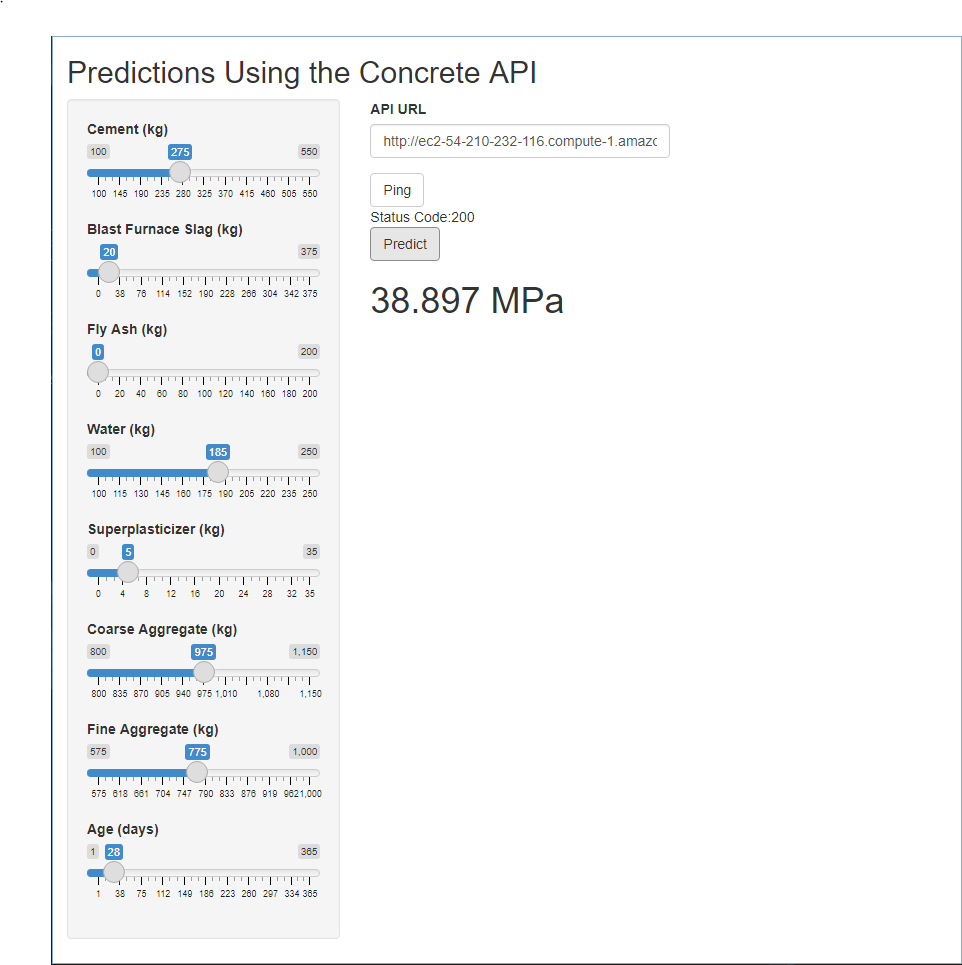

A simple, user interface for requesting predictions from the Concrete API has been built using Shiny.
A simple UI has been built which allows the user to adjust the amounts of the concrete ingredients and age. The user can then send those selections to the Concrete API describes in a previous post running on an Amazon EC2 instance. A prediction of the compressive strength for the concrete formulation and age is then displayed in the Shiny app. The UI also has a button to ping the API and check if it is online. The app is currently deployed on shinyapps.io but the likelihood it is still active when you are reading this post is quite low as it is not an application I will be actively maintaining.

User Interface
The UI for the app is set up using the sidebarLayout with the 8 slider bars on the left for adjusting the concrete ingredient amounts and the age of the concrete. The mainPanel contains the 2 action buttons. The first button is used to ping the status of the API. The second button is to send the sliderInputs to the API and receive back the prediction of concrete strength. A text input is available in case the URL location of the API changes. The results print as text directly below the buttons. The aim was to just get a working Shiny app and, hopefully, the user interface will be improved in a subsequent post.
Code
ui <- fluidPage(
titlePanel("Predictions Using the Concrete API"),
sidebarLayout(
sidebarPanel(
sliderInput("cement", "Cement (kg)", min = 100, max = 550, value = 275),
sliderInput("blast_furnace_slag", "Blast Furnace Slag (kg)", min = 0, max = 375, value = 20),
sliderInput("fly_ash", "Fly Ash (kg)", min = 0, max = 200, value = 0),
sliderInput("water", "Water (kg)", min = 100, max = 250, value = 185),
sliderInput("superplasticizer", "Superplasticizer (kg)", min = 0, max = 35, value = 5),
sliderInput("coarse_aggregate", "Coarse Aggregate (kg)", min = 800, max = 1150, value = 975),
sliderInput("fine_aggregate", "Fine Aggregate (kg)", min = 575, max = 1000, value = 775),
sliderInput("age", "Age (days)", min = 1, max = 365, value = 28),
),
mainPanel(
textInput("api_url", "API URL", "http://ec2-XX-YYY-ZZZ-AAA.compute-1.amazonaws.com:8000/"),
actionButton("go", "Ping"),
textOutput("status"),
actionButton("predict", "Predict"),
h1(textOutput("strength"))
)
)
)Server side
The app uses the httr package to connect to the Concrete API. The httr GET command is used to obtain the API status. The httr status_code function is used to parse the status code from the GET response. The httr POST command is used to send the predictor inputs to the API and receive the output response. The string format for the sending the predictor inputs is shown in the rapidDoc docs by looking the at the curl example. This format is used in the body of the POST command also incorporating the values for the 8 sliderInputs. The prediction for concrete strength is parsed from the content of the POST response. Both the GET and POST commands are contained within an eventReactive tied to their respective action buttons.
Code
server <- function(input, output) {
resp <- eventReactive(input$go, {
GET(paste0(input$api_url, "ping"))
})
post_resp <- eventReactive(input$predict, {
POST(paste0(input$api_url, "predict"), body = paste0('[{"cement":',input$cement,
',"blast_furnace_slag":', input$blast_furnace_slag,
',"fly_ash":', input$fly_ash,
',"water":', input$water,
',"superplasticizer":', input$superplasticizer,
',"coarse_aggregate":', input$coarse_aggregate,
',"fine_aggregate":', input$fine_aggregate,
',"age":', input$age,'}]'))
})
output$status <- renderText({
paste0("Status Code:", status_code(resp()))
})
output$strength <- renderText({
paste0(content(post_resp(), as = "parsed")[[1]][[1]], " MPa")
})
}Predictions for different concrete formulations and ages can be accomplished by adjusting the slider inputs and then pressing the “Predict” action button. Some potential improvements to the functioning of this app could include:
- Clearing the current prediction when the Predict action button is pressed but before the new prediction is received from the API
- Error checking to handle cases when the response is not received or received without a prediction
- Adjustment of the sliders to a specific total weight of concrete
- Recording the recent formulations and prediction results in a table for the user
Summary
A simple app has been built for a user to interface with the Concrete API. The slider bars make it relatively easy to explore the effect of different ingredients and age on the concrete strength compared to manually editing each value in an R script. Hopefully, I will have time to further develop the app with a nicer, user interface and improved functionality in a future post.
─ Session info ───────────────────────────────────────────────────────────────
setting value
version R version 4.2.0 (2022-04-22 ucrt)
os Windows 10 x64 (build 19045)
system x86_64, mingw32
ui RTerm
language (EN)
collate English_United States.utf8
ctype English_United States.utf8
tz America/Chicago
date 2022-12-06
pandoc 2.19.2 @ C:/Program Files/RStudio/bin/quarto/bin/tools/ (via rmarkdown)
quarto 1.1.189 @ C:\\PROGRA~1\\RStudio\\bin\\quarto\\bin\\quarto.exe
─ Packages ───────────────────────────────────────────────────────────────────
! package * version date (UTC) lib source
P sessioninfo * 1.2.2 2021-12-06 [?] CRAN (R 4.2.1)
[1] C:/Users/David Zoller/AppData/Local/Temp/RtmpsraoOb/renv-library-102069bf25f5
[2] C:/Users/David Zoller/Documents/datadavidz.github.io/renv/library/R-4.2/x86_64-w64-mingw32
[3] C:/Users/David Zoller/AppData/Local/Temp/RtmpsraoOb/renv-system-library
P ── Loaded and on-disk path mismatch.
──────────────────────────────────────────────────────────────────────────────